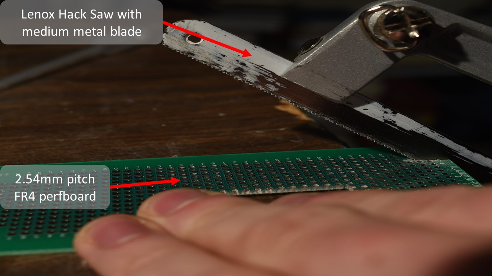

Getting Started
This section is a visual guide to assembling a 48 DPI (~500 micron dot size) 8 nozzle pyrojetprint head, using nothing but off the shelf parts and basic hand tools. The specifications of the finished print head are thus:
-
8 channels, 4 anodes, 4 cathodes
-
heater room temperature resistances(RTR) between 10-100 Ohms, generally clustering around 20-50 ohms
-
Negative temperature coefficient of resistance (NTCR) of ~5.2E-4 Ohm / K
-
maximum pulse energy tolerance of 1.2 joules, maximum drive voltage, 50 Volts, maximum drive current 500 milliamps. Element is intended to ramp from room temperature to 1900 K in <= 10 milliseconds.
-
Heating element material: graphite carbon core Silicon carbide CVD monofilament, 0.135 mm diameter. 0.03mm carbon core diameter. Resistivity of 0.05 Ohm * cm, 2E-4 Ohm * m.
-
Board and manifold material : FR4 glass epoxy prepreg board with copper-nickel plated through holes. Inlet and electrical lead side 2.54 millimeter pitch with 1.2mm diameter holes, 2.0 mm wide square pad contacts concentric to holes. Nozzle plate, round 0.635mm diameter holes on 1.27mm pitch, secured to 2.54 mm pitch board with self tapping m1.2 black oxide screws.
-
Print head must support capacitive touch sensing, temperature monitoring of the heating elements, and IV signal monitoring in the nozzles.
-
Should be cheap, costing less than 2 USD / printhead.
-
needs to be scalable to large numbers of nozzles over a large area, and to small feature sizes (small nozzle and heater widths) and thus high cycling frequencies.
-
Should be designed to minimize heat loss from the heating element, and from the combustion in the nozzles, this prevents flame quenching and excessive power consumption as we scale down feature size.
Scope
Before you get started you should know that this document is only for the most basic of print heads obtainable with off the shelf parts and materials. This is intended as a very simple first step into the pyrojet project, and towards building your own pyrojet printer.
You will require a few basic hand tools, such as a hack saw and precision screw driver. The materials for the print head can be a bit odd to source, such as FR4 plated through hole perf boards on 1.27mm pitch, and the of course the silicon carbide monofilament that is the heating element. Unfortunately, it is one of the vey few materials, commercially available that can do the job and do it well.
Other heating element materials, such as graphite, kanthal, nichrome, platinum, stainless steel, generally do not have high enough resistance to attain the thermal ramp speed required of the heating element, and/or lack the oxidation resistance, hot creep strength and high melting point (>3100 K ) required to survive repeated exposure to stoichiometric hydrocarbon combustion and molten metal particles..
If you do find another material better suited and more widely available (some kind of oxygen resistant graphite? maybe tungsten carbide? Zriconia wire? Molybdenum disillicide wire?) do not hesitate to make it known and use it!
Graphical Assembly Guide
Step 1: Preparing the backplane
Cut out a piece of the 2.54mm pitch PCB. You could use a bandsaw, keyhole saw, jewelers saw, or other implements. There are many kinds of perfboard available. Square pads are less common but do exist, and help greatly in alignment in later steps.
